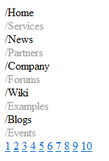
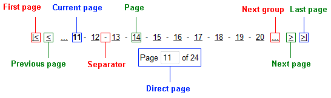

UniPager
The UniPager is a universal paging control that can ensure paging for any control that implements the IUniPageable interface. This includes the following Basic and Generic controls:
As well as the following CMS controls:
Note
If you place the UniPager control after the attached listing control, that control must bind its data later in the page life cycle than during the Init event. Otherwise the UniPager does not apply paging.
For the CMSDataList and CMSRepeater controls, you can solve this issue by setting the DelayedLoading property to true.
The QueryDataList and QueryRepeater controls do not have the DelayedLoading property, but you can ensure that paging is applied correctly by setting their DataBindByDefault property to false and manually calling their Databind() method during the Load event:
protected void Page_Load(object sender, EventArgs e){ QueryRepeater1.DataBind(); }The UniPager is also built into the CMSUniView and QueryUniView controls and can be enabled by their EnablePaging property.
Web part equivalent (portal engine): Universal pager
Getting started
The following is a step-by-step tutorial that shows how to add a page to a CMSRepeater control that displays all pages (menu items) in the system:
Create a new Web form somewhere in your web project.
Drag the CMSRepeater control from the toolbox onto the form.
Set the following properties for the CMSRepeater:
Path: /%
ClassNames: cms.menuitem
DelayedLoading: True
OrderBy: NodeLevel, NodeOrder (when connecting a UniPager, we strongly recommend explicitly setting the order of the displayed data items)
Add the code marked by the CMSRepeater templates comments between the <cms:CMSRepeater> tags. The overall code of the CMSRepeater control should look like this:
<cms:CMSRepeater ID="CMSRepeater1"runat="server"Path="/%"ClassNames="cms.menuitem"DelayedLoading="true"OrderBy="NodeLevel, NodeOrder"><%-- CMSRepeater templates ---------------------------------------------------------- --%><ItemTemplate><%# HTMLHelper.HTMLEncode(Convert.ToString(Eval("NodeAliasPath"))) %></ItemTemplate><AlternatingItemTemplate><font color="#999999"><%# HTMLHelper.HTMLEncode(Convert.ToString(Eval("NodeAliasPath"))) %></font></AlternatingItemTemplate><SeparatorTemplate><br /></SeparatorTemplate><%-- CMSRepeater templates ----------------------------------------------------------- --%></cms:CMSRepeater>This sets the templates used by the CMSRepeater to display the pages (menu items). The control dynamically replaces the <%# ... %> tags with values of the currently displayed record. This is repeated for every record in the data source.
Drag a UniPager control from the toolbox onto the form one line below the CMSRepeater.
Set the UniPager's PageControl property to CMSRepeater1.
Set the GroupSize property to 10.
Add the code marked by the UniPager templates comments between the <cms:UniPager> tags. The overall code of the UniPager control should look like this:
<cms:UniPager ID="UniPager1"runat="server"PageControl="CMSRepeater1"GroupSize="10"><%-- UniPager templates ----------------------------------------------------------- --%><PageNumbersTemplate><a href="<%# Eval("PageURL") %>"><%# Eval("Page") %></a></PageNumbersTemplate><%-- UniPager templates ----------------------------------------------------------- --%></cms:UniPager>This sets the minimum required template that enables the UniPager with a very simple design. Please see the Appearance and styling section to learn about the more advanced templates.
Save the web form.
Right-click the web form in the Solution explorer and select View in Browser.
The control displays a pager under the list.

To make the pager fully functional, continue in the Full structure example section.
Configuration
You can set the following properties for the UniPager control:
|
Common pager control properties |
Description |
|
CurrentPage |
The current page number. |
|
MaxPages |
Maximum number of pages that the control displays. |
|
PageCount |
The current number of pages (read only). |
|
PageSize |
The number of displayed items per page. |
|
UniPager properties |
Description |
Sample value |
|
DataSourceItemsCount |
The amount of items in the data source. |
|
|
DirectPageControlID |
The ID of the control used for direct page changing. |
|
|
DisplayFirstLastAutomatically |
If enabled, the first and last buttons of the pager will be displayed only when there is no other way of accessing the first or last page through the pager. |
|
|
DisplayPreviousNextAutomatically |
If enabled, the previous and next buttons of the pager will be displayed only when there is no other way of accessing the previous or next page through the pager. |
|
|
EnvelopeTag |
The current envelope tag. |
|
|
GroupSize |
The amount of page links displayed in one group. |
|
|
HidePagerForSinglePage |
If true, the pager is hidden if only one page is displayed. |
|
|
HTMLEnvelopeRenderingMode |
The HTML envelope rendering mode for the current page. |
"Always" |
|
PageControl |
The ID of the control to be paged. |
|
|
PagedControl |
The object of the control to be paged. |
|
|
PagerMode |
Determines the type of the used paging parameter. It can either be passed through the URL (QueryString) or through postback (PostBack). |
"PostBack" |
|
QueryStringKey |
Name of the query string parameter that contains the current page number. This is useful if there are multiple UniPager controls on the same page. |
"pagenumber" |
|
RelatedData |
Custom data connected to the object. |
Appearance and styling
The appearance of the UniPager control is determined by the code of its item templates. You can define the following templates within the UniPager tags:
|
Template name |
Description |
Sample value |
|
CurrentPageTemplate |
Template used for the current page in the pager. Use the following in-line code in the template:
|
|
|
DirectPageTemplate |
Template used for direct page changing. Use a TextBox or DropDownList control with ID DirectPageControl to register the page change event. |
|
|
FirstPageTemplate |
Template used for the link to the first page in the pager. Use <%# Eval("FirstURL") %> to get the link to the first page. |
|
|
LastPageTemplate |
Template used for the link to the last page in the pager. Use <%# Eval("LastURL") %> to get the URL of the last page. |
|
|
LayoutTemplate |
Template that determines the overall design of the pager. |
|
|
NextGroupTemplate |
Template used for the link to the next group of pages. Use <%# Eval("NextGroupURL") %> to get the URL of the next group. |
|
|
NextPageTemplate |
Template used for the link to the next page. Use <%# Eval("NextURL") %> to get the URL of the next page. |
|
|
PageNumbersSeparatorTemplate |
Template used for the separator between page links in the pager. |
|
|
PageNumbersTemplate |
Template used for page links in the pager. Use the following in-line code in the template:
|
|
|
PreviousGroupTemplate |
Template used for the link to the previous group of pages. Use <%# Eval("PreviousGroupURL") %> to get the URL of the next group. |
|
|
PreviousPageTemplate |
Template used for the link to the previous page. Use <%# Eval("PreviousURL") %> to get the URL of the next page. |
|
Full structure example
The following example shows how the UniPager control looks when all of its templates are defined.
Note: If you wish to create the example for yourself, first follow the tutorial in the Getting started section up to and including step 5.
Add the code marked by the UniPager templates comments between the <cms:UniPager> tags. The overall code of the UniPager control should look like this:
<cms:UniPager ID="UniPager1"runat="server"PageControl="CMSRepeater1"><%-- UniPager templates ------------------------------------------------------ --%><PageNumbersTemplate><a href="<%# Eval("PageURL") %>"><%# Eval("Page") %></a></PageNumbersTemplate><CurrentPageTemplate><strong><%# Eval("Page") %></strong></CurrentPageTemplate><PageNumbersSeparatorTemplate> - </PageNumbersSeparatorTemplate><FirstPageTemplate><a href="<%# Eval("FirstURL") %>">|<</a></FirstPageTemplate><LastPageTemplate><a href="<%# Eval("LastURL") %>">>|</a></LastPageTemplate><PreviousPageTemplate><a href="<%# Eval("PreviousURL") %>"><</a></PreviousPageTemplate><NextPageTemplate><a href="<%# Eval("NextURL") %>">></a></NextPageTemplate><PreviousGroupTemplate><a href="<%# Eval("PreviousGroupURL") %>">...</a></PreviousGroupTemplate><NextGroupTemplate><a href="<%# Eval("NextGroupURL") %>">...</a></NextGroupTemplate><DirectPageTemplate>Page<asp:TextBox ID="DirectPageControl"runat="server"Style="width: 25px;"/>of<%# Eval("Pages") %></DirectPageTemplate><LayoutTemplate><asp:PlaceHolder runat="server"ID="plcFirstPage"></asp:PlaceHolder><asp:PlaceHolder runat="server"ID="plcPreviousPage"></asp:PlaceHolder> <asp:PlaceHolder runat="server"ID="plcPreviousGroup"></asp:PlaceHolder><asp:PlaceHolder runat="server"ID="plcPageNumbers"></asp:PlaceHolder><asp:PlaceHolder runat="server"ID="plcNextGroup"></asp:PlaceHolder> <asp:PlaceHolder runat="server"ID="plcNextPage"></asp:PlaceHolder><asp:PlaceHolder runat="server"ID="plcLastPage"></asp:PlaceHolder><br /><asp:PlaceHolder runat="server"ID="plcDirectPage"></asp:PlaceHolder></LayoutTemplate><%-- UniPager templates ------------------------------------------------------ --%></cms:UniPager>Save the web form.
Right-click the web form in the Solution explorer and select View in Browser.
The resulting page contains a pager like in the following diagram:

|
UniPager section |
Description |
|
Layout Template |
Determines the overall design of the displayed pager. To place the locations of individual templates into the layout, use PlaceHolder controls with their ID properties set according to the names of the templates, e.g. plcFirstPage for the FirstPageTemplate. The content of individual pages is dependent on the listing control connected to the UniPager. Set the maximum number of items displayed per page through the UniPager control's PageSize property. |
|
Page |
Defined by the code of the PageNumbersTemplate. It is usually used to display the general page links of the pager. The amount of displayed page links can be set by the UniPager control's GroupSize property. |
|
Current page |
Defined by the code of the CurrentPageTemplate. It is usually used to display the number of the currently selected page. |
|
Direct page |
Defined by the code of the DirectPageTemplate. It is usually used to display a control that allows direct switching between pages. The ID property of the used control must be set to DirectPageControl as in the example. |
|
Separator |
Defined by the code of the PageNumbersSeparatorTemplate. It is placed between every page number in the pager. |
|
First/Last page |
These areas are defined by the code of the FirstPageTemplate and LastPageTemplate. They are usually used to display links to the first and last page of the pager. If the UniPager control's DisplayFirstLastAutomatically property is set to true, this area is only shown when there is no other way of accessing the first or last page through the pager. |
|
Next/Previous page |
These areas are defined by the code of the NextPageTemplate and PreviousPageTemplate. They are usually used to display links to the next and previous page of the pager. If the UniPager control's DisplayPreviousNextAutomatically property is set to true, this area is only shown when there is no other way of accessing the previous or next page through the pager. |
|
Next/Previous group |
These areas are defined by the code of the NextGroupTemplate and PreviousGroupTemplate. They are usually used to display links to the next and previous group of pages. |